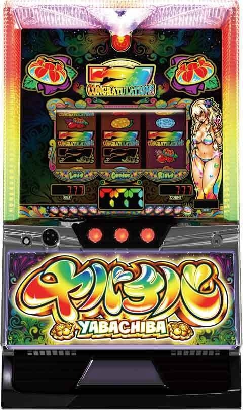
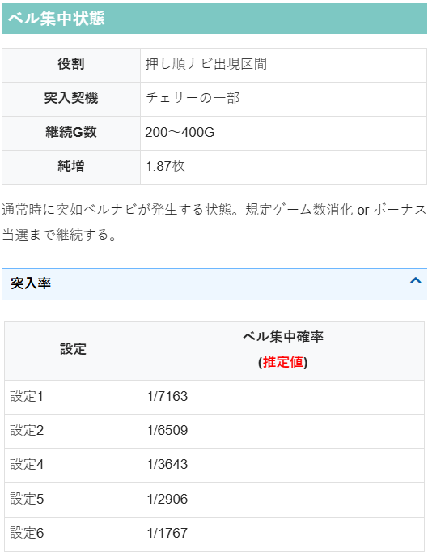
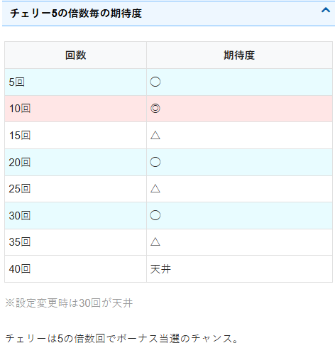

ヤバチバ 🆕

狙い目
【リセット狙い】
300Gから
【ゲーム数天井狙い】
虹7モード後以外 450Gから
虹7モード後 890Gから
※虹7モード後は激辛傾向
※虹7モード突入後以降も暫くはかなり辛い。当日一度でも虹7モード突入している台は虹7モード後の狙い目に合わせた方が良さそう。少なくとも数回初当たりを挟んでいないと辛い。
【ゾーン狙い】
10チェ狙い
8チェから
虹7チャレンジ
ミニ花笠ランプ7個以上点灯 ミニ花笠ランプ消灯まで（100Gくらい）
※10個点灯（虹7モード）後の引き戻しは弱そうなため、32Gやめで良さそう？
【ベル集中状態狙い】
虹7モード後0スルー 200G or 250Gから（5から10チェ打ち出し想定） チェリー5の倍数を2回踏んでから15-20Gくらいベルナビ出るか確認。（チェリー確率は公表値 1/24.2）
※虹7モード後0スルー時の15チェからベル集中状態に突入しやすい。恐らく80％くらい突入。ただし、虹7モード後はかなり辛いためベル集中抜け後は天井直前でもない限りやめになる事が多そう。
※ベル集中突入時は最低でも200Gフォロー、200G以降は15-20Gくらいベルナビ出ないかフォロー
【示唆関連の押し引きについて】
不明
【有利区間関連狙い】
不明
やめ時
基本32Gやめ
ミニ花笠ランプが7個以上点灯していたら100Gまでフォロー（ミニ花笠ランプ消灯まで）
10個点灯（虹7モード）後の引き戻しは弱そう。32Gやめで良さそう？
その他
ベル集中状態

チェリー5の倍数毎の期待度

参考元
かめとうさぎのパチスロブログ
基本情報
- タイプ: スマスロ（BIG/RB 天国型）
- 純増: 約6枚/G（ボーナス中）
- コイン持ち: 約31G/50枚
- ボーナス: BIG＝約110枚／RB＝約50枚／虹7＝777枚以上（上位トリガー）
- 天井: 通常時999G＋α（またはチェリー規定回数）でボーナス当選
- 天国（連荘）: ボーナス後32G以内のボーナスが濃厚
- 着席: 30G
- ゲーム性概要: ●BIG／RB＋上位トリガー虹7のボーナスタイプ ●ボーナス後は天国モードで32G以内の連荘に期待 ●通常時は999G＋αの天井到達でボーナス当選 ●設定変更時はチェリー天井が短縮
Lﾔﾊﾞﾁﾊﾞ
設定変更後1回目ボーナス当選 (G帯別)
設定変更後(台日先頭=その台日で時刻最古の1回目当選) の当選G帯別集計 ／ 母数=台日数116 ／ G帯=25G刻み(素の1回目当選G分布・全数) ／ ゾーン当選率=そのG帯到達に対する当選率(到達ベースハザード) ／ 連荘TY平均/中央=1回目起点の連荘のネットTY(連荘総出玉−連荘中通常G消化×純減)の平均と中央値(平均は虹7上位の爆発に引っ張られる=典型は中央値) ／ 天国移行率=1回目後32G以内に2回目が来た割合 ／ 平均連=1回目起点の連荘のボーナス数(連荘長・1回目含む)の平均
| G帯 | ゾーン当選率(%) | 連荘TY平均(枚) | 連荘TY中央(枚) | 天国移行率(%) | 平均連 | サンプル数 |
|---|---|---|---|---|---|---|
| 全体 | - | 678.7 | 211.1 | 89.7 | 3.6 | 116 |
| 0-24 | 0.9 | 251.5 | 251.5 | 100.0 | 3.0 | 1 |
| 25-49 | 5.2 | 175.6 | 148.4 | 100.0 | 2.7 | 6 |
| 50-74 | 4.6 | 426.0 | 233.5 | 80.0 | 3.4 | 5 |
| 75-99 | 3.9 | 184.6 | 170.3 | 100.0 | 2.8 | 4 |
| 100-124 | 5.0 | 953.4 | 194.8 | 80.0 | 3.6 | 5 |
| 125-149 | 5.3 | 217.3 | 165.1 | 100.0 | 3.0 | 5 |
| 150-174 | 3.3 | 180.6 | 59.0 | 33.3 | 2.3 | 3 |
| 175-199 | 1.1 | 270.8 | 270.8 | 100.0 | 5.0 | 1 |
| 200-224 | 5.8 | 119.9 | 109.6 | 40.0 | 1.8 | 5 |
| 225-249 | 7.4 | 2,919.8 | 204.3 | 66.7 | 6.7 | 6 |
| 250-274 | 5.3 | 190.5 | 158.4 | 100.0 | 3.0 | 4 |
| 275-299 | 1.4 | 217.6 | 217.6 | 100.0 | 4.0 | 1 |
| 300-324 | 2.9 | 173.8 | 173.8 | 100.0 | 2.5 | 2 |
| 325-349 | 0.0 | 0.0 | 0.0 | 0.0 | 0.0 | 0 |
| 350-374 | 2.9 | 146.7 | 146.7 | 50.0 | 2.0 | 2 |
| 375-399 | 6.1 | 181.9 | 194.4 | 75.0 | 2.8 | 4 |
| 400-424 | 3.2 | 195.6 | 195.6 | 100.0 | 3.5 | 2 |
| 425-449 | 3.3 | 173.4 | 173.4 | 100.0 | 2.5 | 2 |
| 450-474 | 3.5 | 2,459.8 | 2,459.8 | 100.0 | 7.0 | 2 |
| 475-499 | 7.1 | 276.7 | 298.1 | 75.0 | 4.0 | 4 |
| 500-524 | 7.7 | 124.6 | 120.4 | 100.0 | 2.2 | 4 |
| 525-549 | 4.2 | 269.4 | 269.4 | 100.0 | 3.5 | 2 |
| 550-574 | 4.3 | 2,972.1 | 2,972.1 | 100.0 | 8.0 | 2 |
| 575-599 | 6.8 | 1,866.1 | 447.0 | 100.0 | 6.7 | 3 |
| 600-624 | 4.9 | 2,575.3 | 2,575.3 | 100.0 | 7.0 | 2 |
| 625-649 | 10.3 | 1,392.0 | 294.6 | 100.0 | 5.0 | 4 |
| 650-674 | 11.4 | 159.8 | 109.2 | 100.0 | 2.8 | 4 |
| 675-699 | 9.7 | 296.2 | 300.1 | 100.0 | 3.3 | 3 |
| 700-724 | 25.0 | 210.6 | 196.1 | 100.0 | 2.7 | 7 |
| 725-749 | 42.9 | 764.6 | 223.1 | 100.0 | 4.0 | 9 |
| 750-774 | 33.3 | 162.0 | 137.2 | 100.0 | 2.8 | 4 |
| 775-799 | 12.5 | 361.8 | 361.8 | 100.0 | 5.0 | 1 |
| 800-824 | 14.3 | 233.6 | 233.6 | 100.0 | 3.0 | 1 |
| 825-849 | 50.0 | 1,922.0 | 303.4 | 100.0 | 5.7 | 3 |
| 850-874 | 66.7 | 147.6 | 147.6 | 100.0 | 2.0 | 2 |
| 875-899 | 0.0 | 0.0 | 0.0 | 0.0 | 0.0 | 0 |
| 900-924 | 0.0 | 0.0 | 0.0 | 0.0 | 0.0 | 0 |
| 925-949 | 100.0 | 168.3 | 168.3 | 100.0 | 2.0 | 1 |